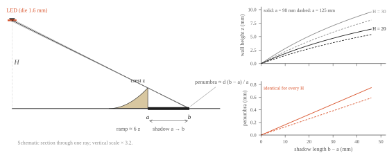

Everything follows from one fact: the lamp is a point on the axis, so every shadow runs straight out along a radius.

3.1Radial rays
A point on the axis makes every shadow edge a radius.
Light leaves the LED in vertical planes through the axis. Each 1.5° wedge of the dial can therefore be designed on its own as a one-dimensional problem along its ray, and a grid of arcs and radii fits the light exactly.
3.2Wall height
z = H (1 − a / b)
A crest at radius a and height z shades the floor out to b = aH / (H − z). A shadow from the inner to the outer edge of the ring needs 6.4 mm at H = 20; a single cell needs about 0.5 mm.
3.3Penumbra
w ≈ d (b − a) / a
The 1.6 mm die blurs each edge by up to 0.75 mm. Lowering the lamp lowers the walls in proportion, so the blur stays the same; what grows is the sensitivity to carving error, db/dz = aH / (H − z)².
3.4Try it
Walls stay below 5.3 mm at H = 20, penumbra below 0.8 mm, so a cell of 2.5 mm or more keeps a clean edge.